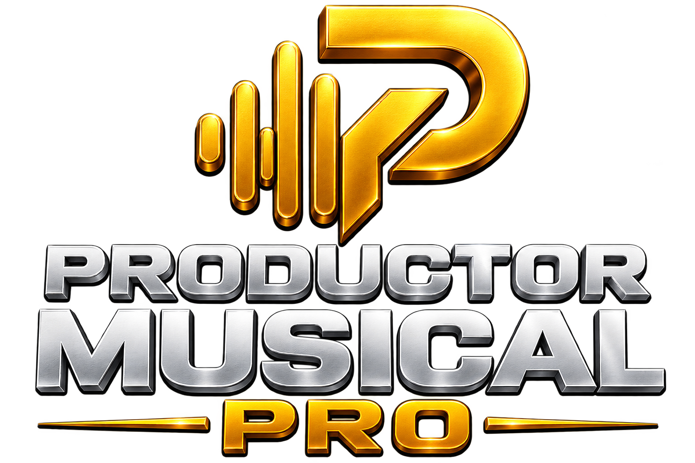

CURSOS DE PRODUCCIÓN MUSICAL
Productor Musical Pro
Página oficial de la aplicación. Aquí podrás publicar después la descarga oficial de la APK, novedades y los cursos disponibles.
Descargar APK — próximamenteGestor
Página oficial de la aplicación. Aquí podrás publicar después la descarga oficial de la APK, novedades y los cursos disponibles.
Descargar APK — próximamenteGestor